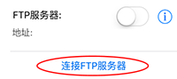
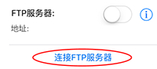

文件传输
除了支持一般iTune文件传输（具体步骤参见http://support.apple.com/kb/PH12318）外，还支持HTTP/FTP传输（通过WiFi）和AirDrop传输（通过WiFi和蓝牙）。
- HTTP传输。它不要求在另一方（PC或者手机）额外安装任何软件，只需要网络浏览器（如Chrome，Safari，IE）即可。首先，你需要在加密盘应用内开启HTTP服务器，然后，你在另一方打开浏览器输入HTTP服务器地址，接着，你即可以在进入的网页上传或下载文件了。
- FTP传输。支持批量（大）文件传输。它在本应用中有两种用法：
a. 让本设备变成一个FTP服务器，其它设备如个人电脑通过FTP客户端（如FileZilla，可到https://filezilla-project.org下载，Windows上的资源管理器也可以用但是没FilleZilla那么强大如支持断点续传）连接本设备。
b. 另一种FTP传输方式是本设备作为客户端，去连接其它设备的FTP服务器。使用第一种用法请在侧边栏开启FTP服务器，然后在其它设备的FTP客户端输入开启按钮下面显示的地址进行连接。使用第二种用法请点击侧边栏的“连接FTP服务器”按钮，在弹出框中输入相应信息后连接，然后进入选择模式选择要下载文件后点击下载，文件将会被下载到主界面当前浏览的目录下。

- AirDrop传输。在较新的苹果设备上（iPhone/iPod 5及以上，iPad 4及以上，iPad mini及以上）可用，一次传输一个文件。请通过在要传输的文件上长按并选择“在其他应用里打开”或者打开该文件后点击右上角的操作按钮来调出AirDrop菜单。
- HTTP传输。它不要求在另一方（PC或者手机）额外安装任何软件，只需要网络浏览器（如Chrome，Safari，IE）即可。首先，你需要在加密盘应用内开启HTTP服务器，然后，你在另一方打开浏览器输入HTTP服务器地址，接着，你即可以在进入的网页上传或下载文件了。
- FTP传输。支持批量（大）文件传输。它在本应用中有两种用法：
a. 让本设备变成一个FTP服务器，其它设备如个人电脑通过FTP客户端（如FileZilla，可到https://filezilla-project.org下载，Windows上的资源管理器也可以用但是没FilleZilla那么强大如支持断点续传）连接本设备。
b. 另一种FTP传输方式是本设备作为客户端，去连接其它设备的FTP服务器。使用第一种用法请在侧边栏开启FTP服务器，然后在其它设备的FTP客户端输入开启按钮下面显示的地址进行连接。使用第二种用法请点击侧边栏的“连接FTP服务器”按钮，在弹出框中输入相应信息后连接，然后进入选择模式选择要下载文件后点击下载，文件将会被下载到主界面当前浏览的目录下。

- AirDrop传输。在较新的苹果设备上（iPhone/iPod 5及以上，iPad 4及以上，iPad mini及以上）可用，一次传输一个文件。请通过在要传输的文件上长按并选择“在其他应用里打开”或者打开该文件后点击右上角的操作按钮来调出AirDrop菜单。